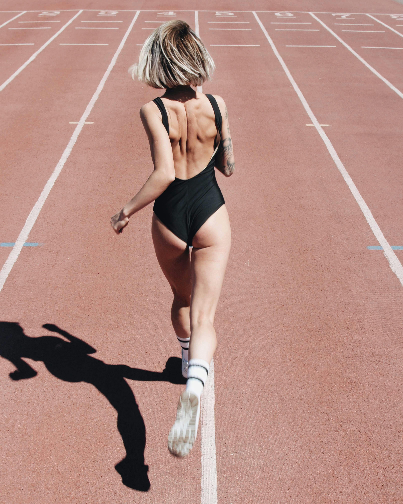

A sport, mint hobbi
A sport az erő és a kitartás művészete
Sportok, amiket kipróbáltam
- Futás
- Jóga
- Úszás
- Hastánc
- Hip-hop tánc
- Konditermi edzés
- Saját testsúlyos edzés




Kapcsolatom a sporttal
A sport 10 éves korom körül lett az éltetem része. Eleinte egy barátnőmmel jártam el futni a közeli erdő mentén, majd mellette otthoni testsúlyos edzésekbe kezdtem. Élveztem, hogy egyre hosszabb távot tudok lefutni és az edzés közbeni ismétlésszámok is nőttek. A mentális egészségemen is segített, kitartóbb és derűsebb lettem, igaz ezt akkoriban még nem értettem. Abban viszont biztos voltam, hogy jó hatással van rám, így kisebb nagyobb kihagyásokkal, de folytattam. Jelenleg is a futás a legkedvesebb számomra, viszont nyár óta többször járok úszni is. A jóga, nyújtás amióta gép előtt dolgozom, egy felüdülés a testemnek, igyekszem időt szánni rá.